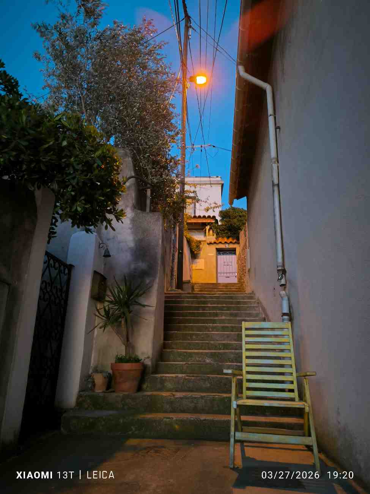

Présentation
Pour ce devoir , j'ai choisi de presenter la photographie parce que c'est une activité que j'aime vraiment . j'aime prendre des photos pendant mes promenades, mes voyages ou même dans des moments très simples du quotidien. Cela me permet de garder des souvenirs, mais aussi de faire plus attention aux détails autour de moi.
ce que j'apprécie le plus, c'est le fait qu'une photo peut montrer une ambiance en quelques seconde. Une rue calme, une lumiére de fin de journée, une vue sur la mer ou une photo de nuit peuvent raconter quelque chose sans avoir besoin de beaucoup de texte.
Une photo qui représente bien ce que j'aime
J'ai choisi cette photo pour l'accueil parce qu'elle montre exactement le type d'image que j'aime prendre. On y voit un escalier et une chaise photographiés pendant une promenade dans le 7eme arrondissement de Marseille, au moment du coucher du soleil. J'aime cette image parce qu'elle est simple, mais l'ambiance de fin de journée lui donne quelque chose de plus fort.

Organisation du site
- Dans la page suivante, j'explique pourquoi j'aime la photographie et ce que cette activité m'apporte.
- Dans la page sur les voyages, je présente plusieurs photos prises a Marseille et au bord de la mer.
- Dans la dernière page, je parle du matériel que j'utilise le plus souvent pour photographier.